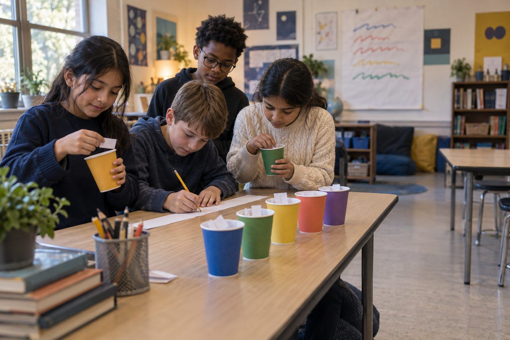

Học tập của học sinh · Lớp 3–5, Lớp 6–8 · 45 phút
Đoán chữ tiếp theo bằng tay
Học sinh làm một "máy đoán chữ" bằng giấy từ các thẻ câu, xem nó bịa ra một sự thật sai rất tự tin về một cái hồ, và khám phá vì sao một câu lệnh dài hơn có giúp ích nhưng không bao giờ làm cho chatbot thực sự hiểu biết.
Chatbot AI tạo sinh viết bằng cách đoán chữ nào có khả năng xuất hiện tiếp theo, dựa trên các khuôn mẫu trong những văn bản mà nó đã học. Trong trò chơi này, các nhóm trở thành cỗ máy đó. Các em đếm xem chữ nào theo sau chữ nào trong tám thẻ câu ngắn, rồi "viết" câu mới bằng cách rút các mảnh giấy từ những chiếc cốc. Các câu tạo ra đúng ngữ pháp và thường buồn cười. Sau đó, ở vòng hồ nước, cỗ máy tạo ra một câu nghe như sự thật nhưng lại sai, dù mọi mảnh ghép của nó đều đến từ những thẻ đúng. Học sinh thử xem một câu lệnh dài hơn có khắc phục được vấn đề không, và ra về với khả năng giải thích bằng lời của mình vì sao chatbot có thể nghe rất chắc chắn mà vẫn sai.
Trong bộ tài liệu này
- Phiếu A: Thẻ câu (thẻ cắt rời)
- Phiếu B: Bảng đếm chữ tiếp theo (sơ đồ tổ chức)
- Phiếu C: Cỗ máy của chúng em đã viết ra câu đó như thế nào? (phiếu bài tập)
- Đáp án cho người điều phối (trang cuối)
Chỉ báo ELE của TCEA
- AI1.1 Tôi biết các hệ thống AI hoạt động như thế nào và khả năng của chúng trong bối cảnh giáo dục.
- AI1.3 Tôi nhận thức được những hạn chế hiện tại và các thiên kiến tiềm ẩn trong hệ thống AI.
- S5.3 Em nhận thức được cách vận dụng tư duy máy tính vào nhiều môn học khác nhau.
- S1.3 Em nhận thức được AI có thể hỗ trợ việc học của mình như thế nào.
- AI4.1 Tôi biết cách thúc đẩy kỹ năng tư duy phản biện đối với thông tin do AI tạo ra.
Hướng dẫn đầy đủ cho người điều phối: mglearn.github.io/eles/vi/activities/next-word-by-hand.html
Phiếu A cho Đoán chữ tiếp theo bằng tay
Thẻ câu
Cắt rời. Dùng Thẻ Truyện 1–8 trước. Để Thẻ Hồ 9–12 trong phong bì cho đến khi thầy cô bảo mở. Mặt sau là ghi chú dành cho giáo viên.
Tờ 1/2
Truyện 1
con chó chạy tới con đường .
Truyện 2
con chó ăn con cá .
Truyện 3
con mèo chạy tới con suối .
Truyện 4
con mèo ngồi trên con thuyền .
Truyện 5
con gà chạy tới con đò .
Truyện 6
con vịt ngồi trên con trâu .
Truyện 7
con gà ăn con giun .
Truyện 8
con vịt ăn con giun .
Phiếu A cho Đoán chữ tiếp theo bằng tay
Thẻ câu
Cắt rời. Dùng Thẻ Truyện 1–8 trước. Để Thẻ Hồ 9–12 trong phong bì cho đến khi thầy cô bảo mở. Mặt sau là ghi chú dành cho giáo viên.
Tờ 2/2
Hồ 9
Wrenmere thuộc quận Harlow .
Hồ 10
Mossmere thuộc quận Pike .
Hồ 11
Wrenmere là hồ sâu nhất bang .
Hồ 12
Mossmere là hồ rộng nhất bang .
Phiếu B cho Đoán chữ tiếp theo bằng tay
Bảng đếm chữ tiếp theo
Với mỗi chữ, đánh một vạch cạnh chữ đứng ngay sau nó. Làm một mảnh giấy cho mỗi vạch đếm và bỏ vào chiếc cốc dán nhãn chữ đứng trước. Khi em rút được đường, cá, suối, thuyền, đò, trâu hoặc giun, câu kết thúc.
| Sau chữ này… | …là chữ này (mỗi lần một vạch) | Số mảnh giấy |
|---|---|---|
| con | ||
| chó | ||
| mèo | ||
| gà | ||
| vịt | ||
| chạy | ||
| ngồi | ||
| ăn | ||
| tới | ||
| trên | ||
| VÒNG HỒ NƯỚC (bắt đầu): Wrenmere | ||
| VÒNG HỒ NƯỚC (bắt đầu): Mossmere | ||
| VÒNG HỒ NƯỚC (hai chữ): thuộc quận | ||
| VÒNG HỒ NƯỚC (hai chữ): là hồ |
Phiếu C cho Đoán chữ tiếp theo bằng tay
Cỗ máy của chúng em đã viết ra câu đó như thế nào?
Tự trả lời sau vòng hồ nước. Dùng lời của chính em. Sau đó chia sẻ một câu trả lời với bạn cùng cặp.
Câu buồn cười nhất mà cỗ máy của chúng em viết là:
Cỗ máy của chúng em đã viết một điều sai về một cái hồ. Không thẻ nào nói điều đó. Nó từ đâu ra?
Khi chúng em cho cỗ máy ba chữ thay vì hai chữ, điều gì đã thay đổi? Câu lệnh dài hơn KHÔNG thể khắc phục được điều gì?
Hoàn thành câu: "Chatbot có thể nghe chắc chắn mà vẫn sai vì…"
Khi chatbot nói với em một sự thật, em có thể kiểm tra bằng cách…
Vẽ cỗ máy giấy của em đang hoạt động: những chiếc cốc, một mảnh giấy, và một câu đang được tạo ra.
Chỉ dành cho người điều phối, Đoán chữ tiếp theo bằng tay
Đáp án và ghi chú
Phiếu A: Thẻ câu
- Truyện 1
- Thêm: con→chó, chó→chạy, chạy→tới, tới→con, con→đường. Làm mẫu thẻ này với cả lớp.
- Truyện 2
- Mảnh giấy thứ hai sau "chó" (ăn), và "ăn→con" đầu tiên.
- Truyện 3
- "chạy→tới" thứ hai. Cốc chạy sẽ chỉ chứa các mảnh "tới": một phỏng đoán chắc chắn.
- Truyện 4
- Giới thiệu ngồi→trên và trên→con.
- Truyện 5
- "chạy→tới" thứ ba. Cốc con ngày càng có nhiều chữ khác nhau.
- Truyện 6
- Chú ý những câu được tạo ra như "con mèo ngồi trên con cá." Ngữ pháp đúng, ý nghĩa sai.
- Truyện 7
- Thêm ăn→con và con→giun.
- Truyện 8
- Sau thẻ này, cốc con có 16 mảnh giấy với 11 chữ khác nhau. Sự pha trộn đó là nơi các câu buồn cười xuất hiện.
- Hồ 9
- Đúng theo các thẻ. Với ba chữ ("Wrenmere thuộc quận"), chữ tiếp theo duy nhất là Harlow.
- Hồ 10
- Chỉ với hai chữ ("thuộc quận"), cỗ máy không biết mình đang nói về hồ nào, nên câu "Wrenmere thuộc quận Pike" có thể xuất hiện.
- Hồ 11
- Nguồn gốc của ảo giác: sau "là hồ" có thể là "sâu."
- Hồ 12
- Trộn với thẻ 11, việc đoán theo hai chữ có thể tạo ra "Mossmere là hồ sâu nhất bang." Mảnh nào cũng đúng; cả câu lại sai.